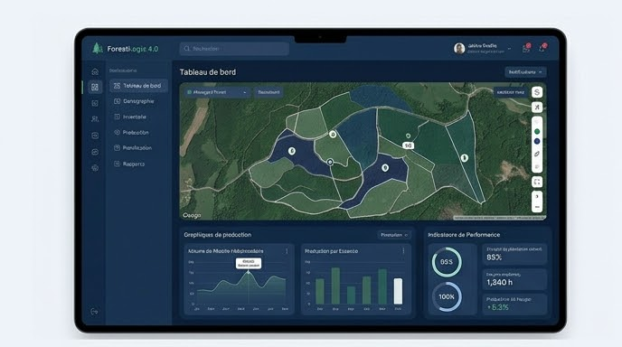

Être entrepreneur forestier au Québec, c'est jongler quotidiennement avec une multitude de responsabilités : gérer plusieurs chantiers simultanément, coordonner des équipes dispersées sur le territoire, entretenir un parc de machinerie lourde valant des millions de dollars, assurer la conformité aux exigences du MRNF et, malgré tout cela, demeurer rentable. Sans les bons outils numériques, cette réalité se traduit souvent par des journées interminables passées à compiler des données, vérifier des feuilles de temps et préparer manuellement des rapports. Ce guide explore comment les solutions numériques pour entrepreneurs forestiers transforment radicalement la gestion des opérations.
La réalité quotidienne de l'entrepreneur forestier québécois
L'entrepreneur forestier typique au Québec gère entre deux et dix chantiers actifs simultanément, répartis sur un territoire pouvant couvrir des centaines de kilomètres. Chaque chantier implique une équipe de 5 à 30 travailleurs, un parc de machinerie incluant abatteuses, débusqueuses, ébrancheuses, transporteurs et camions, ainsi qu'un ensemble de contraintes réglementaires spécifiques à chaque bloc de coupe.
Les donneurs d'ouvrage, qu'il s'agisse de grandes papetières comme Domtar, de coopératives forestières comme le Groupement forestier Québec (GFQ) ou d'autres industriels, ont chacun leurs propres exigences en matière de rapports, de formats de données et de fréquence de reddition de comptes. L'entrepreneur doit s'adapter à chaque client tout en maintenant ses propres systèmes de gestion interne.
Les irritants qui freinent la productivité
Les feuilles de temps papier : un gouffre de temps
La gestion des feuilles de temps sur papier est probablement l'irritant le plus universellement ressenti par les entrepreneurs forestiers. Chaque opérateur remplit manuellement sa feuille en fin de journée, souvent dans des conditions peu propices à l'écriture, à bord de sa machinerie ou dans un camp forestier. Ces feuilles doivent ensuite être récupérées, déchiffrées, validées et retranscrites dans un système informatique au bureau. Les erreurs de lecture, les oublis de déclaration et les retards d'acheminement se traduisent directement en problèmes de paie et de facturation.
Le suivi de carburant : un casse-tête fiscal
Le suivi de carburant est un autre processus qui consomme énormément de temps lorsqu'il est géré manuellement. Les entrepreneurs forestiers ont droit à un remboursement de taxes sur le carburant utilisé hors route, mais pour y avoir accès, ils doivent documenter précisément chaque ravitaillement : machine concernée, quantité, date, horamètre. Sur un chantier avec 15 machines ravitaillées quotidiennement, la comptabilisation manuelle devient rapidement ingérable et les pertes fiscales liées aux oublis de déclaration peuvent représenter des milliers de dollars annuellement.
Les données déconnectées entre terrain et bureau
Sans système intégré, les données de production, de maintenance, de temps et de carburant vivent dans des silos séparés. Le bureau ne sait pas ce qui se passe sur le terrain en temps réel, les décisions de gestion se prennent avec des données qui ont parfois une semaine de retard, et la préparation des rapports pour les donneurs d'ouvrage devient un exercice de compilation manuelle fastidieux et sujet aux erreurs.
Comment les outils numériques résolvent chaque irritant
Gestion des chantiers : documents, prescriptions et listes de prix
Un logiciel de gestion des opérations forestières permet de structurer chaque chantier avec ses documents associés : prescriptions sylvicoles, listes de prix par essence, cartes de secteur, permis de coupe et instructions spécifiques du donneur d'ouvrage. Toute l'information est centralisée et accessible tant au bureau que sur les tablettes de terrain. Lorsqu'une prescription est modifiée, la mise à jour est automatiquement propagée vers les appareils de terrain lors de la prochaine synchronisation.
Gestion de flotte : maintenance, codes QR et bons de travail
La gestion de flotte numérique transforme l'entretien de la machinerie. Chaque pièce d'équipement est identifiée par un code QR unique. Un simple scan avec la tablette de terrain affiche l'historique complet de la machine : heures moteur, derniers entretiens, bons de travail en cours, pièces commandées. Les alertes de maintenance préventive se déclenchent automatiquement selon les seuils configurés (heures, kilomètres, dates), évitant les pannes coûteuses et les arrêts non planifiés.
Automatisation des feuilles de temps
Les feuilles de temps numériques éliminent la saisie manuelle au bureau. L'opérateur enregistre ses heures directement sur la tablette de terrain, avec les temps de déplacement, les heures productives et les arrêts automatiquement catégorisés. La validation par le contremaître se fait en quelques clics, et les données sont transmises directement au système de paie. Le temps de traitement passe de plusieurs heures par semaine à quelques minutes.
Suivi de carburant et rapports de remboursement de taxes
Le suivi de carburant numérique enregistre chaque ravitaillement avec la machine associée, la quantité, le relevé d'horamètre et la géolocalisation. En fin de période, le système génère automatiquement les rapports de remboursement de taxes sur le carburant dans le format requis par les autorités fiscales. Plus aucun ravitaillement n'est oublié, et le processus de réclamation, autrefois laborieux, devient automatique.
Suivi de production par essence
Le suivi de production par essence d'arbre est essentiel pour la facturation et les rapports au donneur d'ouvrage. Le système permet de saisir les volumes récoltés par machine, par opérateur et par essence, avec calcul automatique des rendements et comparaison avec les objectifs. Les données de production alimentent directement la facturation et les rapports MRNF.
Gestion des livraisons
La gestion des livraisons de bois suit chaque chargement de la forêt à l'usine : identification du transporteur, volume, essence, destination, heure de départ et d'arrivée. Le suivi en temps réel permet de planifier les rotations de camions et d'optimiser la logistique de transport, tout en fournissant une documentation complète pour la facturation.
Rapports clients : détaillés, sommaires et internes
La production de rapports clients est l'une des fonctionnalités les plus appréciées. Le système génère trois niveaux de rapports : le rapport détaillé avec toutes les données brutes pour les vérifications, le rapport sommaire avec les indicateurs clés pour les réunions de gestion, et le rapport interne avec les analyses de rentabilité pour l'entrepreneur. Chaque donneur d'ouvrage peut recevoir ses rapports dans le format qu'il exige, sans aucun travail de reformatage.
ForestLogix : la solution intégrée pour entrepreneurs forestiers
ForestLogix a été conçu en collaboration avec des entrepreneurs forestiers québécois pour répondre précisément à l'ensemble de ces besoins. La plateforme centralise la gestion des chantiers, de la flotte, des feuilles de temps, du carburant, de la production, des livraisons et des rapports dans un système unique et cohérent. Chaque module communique avec les autres, éliminant les silos de données et les doubles saisies qui caractérisent les approches fragmentées.
La gestion multi-chantiers et multi-clients est au coeur de l'architecture de ForestLogix. Chaque chantier possède son propre ensemble de documents, de configurations et de listes de prix, tout en alimentant les tableaux de bord consolidés qui donnent à l'entrepreneur une vue d'ensemble de toutes ses opérations.
MobileLogix : l'outil des équipes de terrain
Sur le terrain, MobileLogix est l'interface par laquelle les opérateurs et les contremaîtres interagissent avec le système. L'application fonctionne à 100 % hors ligne sur des tablettes durcies conçues pour résister aux conditions extrêmes de la forêt. La saisie des feuilles de temps, du carburant, de la production et des inspections se fait en quelques touches, avec des formulaires optimisés pour une utilisation avec des gants de travail.
L'intégration de l'intelligence artificielle dans MobileLogix ajoute une couche de productivité supplémentaire : le chatbot forestier répond aux questions techniques des opérateurs, la lecture vocale permet de consulter l'information sans quitter le chantier des yeux, et la génération automatique de rapports simplifie la documentation de fin de journée.
Des entreprises forestières qui ont fait le virage
Plusieurs entreprises majeures de l'industrie forestière québécoise ont adopté les solutions G.A. Logix pour moderniser leurs opérations. Des organisations comme Domtar et le Groupement forestier Québec utilisent nos outils au quotidien pour gérer leurs activités de récolte, de transport et de planification. Ces déploiements à grande échelle démontrent la robustesse et la maturité des solutions dans des contextes opérationnels exigeants, avec des centaines d'utilisateurs simultanés répartis sur de vastes territoires forestiers.
Les gains rapportés par ces organisations sont cohérents : réduction significative du temps administratif, amélioration de la précision des données, accélération du cycle de facturation et conformité simplifiée avec les exigences réglementaires du MRNF.
Faites le premier pas vers la transformation numérique
La complexité de la gestion d'une entreprise forestière ne diminuera pas : les exigences réglementaires se resserrent, les donneurs d'ouvrage demandent toujours plus de données et la compétition pour les contrats s'intensifie. Les entrepreneurs forestiers qui investissent dans des outils numériques adaptés à leur réalité se positionnent pour prospérer dans ce contexte exigeant.
G.A. Logix comprend les défis uniques des entrepreneurs forestiers parce que nos solutions ont été développées sur le terrain, en collaboration directe avec les professionnels qui les utilisent chaque jour. Contactez notre équipe pour une démonstration et découvrez comment ForestLogix et MobileLogix peuvent simplifier vos opérations.